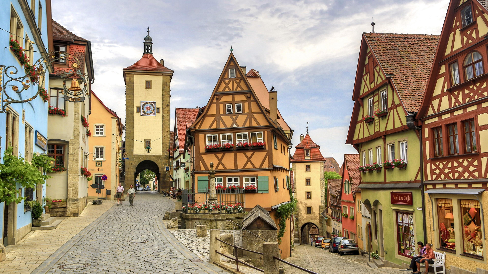

Germany, officially Federal Republic of Germany, German Deutschland or Bundesrepublik Deutschland,
country of north-central Europe, traversing the continent’s main physical divisions, from the outer
ranges of the Alps northward across the varied landscape of the Central German Uplands and then
across the North German Plain.
One of Europe’s largest countries, Germany encompasses a wide variety of landscapes: the tall, sheer
mountains of the south; the sandy, rolling plains of the north; the forested hills of the urbanized
west; and the plains of the agricultural east. At the spiritual heart of the country is the
magnificent east-central city of Berlin, which rose phoenixlike from the ashes of World War II and
now, after decades of partition, is the capital of a reunified Germany, and the Rhine River, which
flows northward from Switzerland and is celebrated in visual art, literature, folklore, and song.
Along its banks and those of its principal tributaries—among them the Neckar, Main, Moselle, and
Ruhr—stand hundreds of medieval castles, churches, picturesque villages, market towns, and centres
of learning and culture, including Heidelberg, the site of one of Europe’s oldest universities
(founded in 1386), and Mainz, historically one of Europe’s most important publishing centres. All
are centrepieces of Germany’s thriving tourist economy, which brings millions of visitors to the
country each year, drawn by its natural beauty, history, culture, and cuisine (including its
renowned wines and beers).
Introduction
History
German history can be divided into the following time periods:
The First Reich 843-1806
The Second Reich 1871-1918
The Weimar Republic 1919-1933
The Third Reich 1933-1945
Post World War II and the Reunification of Germany 1945-1990-Present
Medieval Germany

German history can be divided into the following time periods:
Charlemagne established the First Reich of the German Empire.
He was known for his military prowess –prior to Charlemagne the Slavic tribes had gradually
pushed
their territories westward;
Charlemagne stopped this progression, expanded the Germanic territories, and brought them under
German rule.
Culturally the German Empire was divided into the Germanic and Slavic areas.
These cultural nuances were evident in the dialect and naming practices.
In the 16th century there was also a consonant shift in the German dialect. In the North,
Plattdeutsch, or Low German was spoken.In the South, Hochdeutsch, or High German was spoken.
Germany was a conglomerate of nobility areas including kingdoms, provinces, duchies and principalities. In 1789 there were over 1,700 independent German States. Germany did not exist as a “nation” until 1871. Social standing defined one’s rights and obligations in pre-1900 German society. The belief system was the Nobles were to protect, the Clergy were to pray and the Peasants were to work. Your station was believed to be determined by God and therefore unchangeable - upward mobility was almost impossible. Farmers were tenants rather than land owners and feudalism empowered those who owned the land. The largest landowners were the nobility and the clergy. As landowners, the Manor Lord was responsible for protecting his serfs. In return for cultivating the land, the serfs were obligated to provide to the Manor Lord: labour, produce, military service and taxes. As serfs, they could not marry, change occupations, or move without the permission of their Lords. Feudalism existed in some parts of Germany up until WW I.
Germany was a conglomerate of nobility areas including kingdoms, provinces, duchies and principalities. In 1789 there were over 1,700 independent German States. Germany did not exist as a “nation” until 1871. Social standing defined one’s rights and obligations in pre-1900 German society. The belief system was the Nobles were to protect, the Clergy were to pray and the Peasants were to work. Your station was believed to be determined by God and therefore unchangeable - upward mobility was almost impossible. Farmers were tenants rather than land owners and feudalism empowered those who owned the land. The largest landowners were the nobility and the clergy. As landowners, the Manor Lord was responsible for protecting his serfs. In return for cultivating the land, the serfs were obligated to provide to the Manor Lord: labour, produce, military service and taxes. As serfs, they could not marry, change occupations, or move without the permission of their Lords. Feudalism existed in some parts of Germany up until WW I.
Cultural life

The birthplace of the modern printing press and of influential schools of philosophy and artistic
styles, Germany has long played an important role in Western culture, and the arts have been central
to Germany’s idea of itself. Indeed, the historian Hagen Schulze observed that the German nation was
born in the minds of the intelligentsia, as a cultural entity without direct
ties to politics. It was therefore only logical that its great heroes were not princes and military
leaders as in France and England but rather a collection of poets and philosophers.…Germany’s
extraordinary cultural flowering made it the new Greece, said both Friedrich von Schiller and
Wilhelm von Humboldt—powerless but intellectually supreme.
That ideal fell only when the German nation began to experiment with power and expand militarily,
but it remains fondly held by contemporary German intellectuals as a model worthy of emulation in a
new Europe.
During the period of partition, West Germany, as heir to Germany’s older regions, was custodian of the greater portion of the country’s rich cultural legacy. The majority of Germany’s architectural monuments—of Roman Germany and of the medieval Romanesque and southern German Baroque styles—fell within its borders, as did many of the great libraries, archives, and facilities for the performing arts. Yet some of the greatest monuments of German cultural and historical achievement were located in East Germany, including the Wartburg of Martin Luther, the Weimar of Johann Wolfgang von Goethe, and the Leipzig of Johann Sebastian Bach; a large share of prewar Germany’s art treasures also rested in East Germany, especially in East Berlin and Dresden. After the division of Germany, many of the cultural assets originally from the eastern sector were removed to the West or to Russia, which generally refused to return them after unification. For example, it is estimated that some 200,000 works of art were taken from Germany after World War II, and German sources estimate that more than 4.6 million books were taken; Russian holdings include a Gutenberg bible and thousands of works from the Berlin Museum’s East Asian collection. Nonetheless, some materials, such as a stained-glass window from the Marienkirche in Frankfurt, have been returned. Many of East Germany’s artists, writers, and institutions, including entire publishing houses, relocated to West Germany or set up successor organizations there.
Despite the political division, the German cultural and artistic tradition remained identifiably the same. In the German-speaking world, a writer or painter or composer or playwright or sculptor was German whether holding a passport from the Federal Republic or from the Democratic Republic. Moreover, in art and literature the adjective deutsch (“German”) has no strict political boundaries. For example, the Austrian composer Gustav Mahler, the Czech novelist Franz Kafka, the Romanian poet Paul Celan, and the Swiss playwright Friedrich Dürrenmatt all are considered “German” because their work falls within the German cultural tradition.
During the period of partition, West Germany, as heir to Germany’s older regions, was custodian of the greater portion of the country’s rich cultural legacy. The majority of Germany’s architectural monuments—of Roman Germany and of the medieval Romanesque and southern German Baroque styles—fell within its borders, as did many of the great libraries, archives, and facilities for the performing arts. Yet some of the greatest monuments of German cultural and historical achievement were located in East Germany, including the Wartburg of Martin Luther, the Weimar of Johann Wolfgang von Goethe, and the Leipzig of Johann Sebastian Bach; a large share of prewar Germany’s art treasures also rested in East Germany, especially in East Berlin and Dresden. After the division of Germany, many of the cultural assets originally from the eastern sector were removed to the West or to Russia, which generally refused to return them after unification. For example, it is estimated that some 200,000 works of art were taken from Germany after World War II, and German sources estimate that more than 4.6 million books were taken; Russian holdings include a Gutenberg bible and thousands of works from the Berlin Museum’s East Asian collection. Nonetheless, some materials, such as a stained-glass window from the Marienkirche in Frankfurt, have been returned. Many of East Germany’s artists, writers, and institutions, including entire publishing houses, relocated to West Germany or set up successor organizations there.
Despite the political division, the German cultural and artistic tradition remained identifiably the same. In the German-speaking world, a writer or painter or composer or playwright or sculptor was German whether holding a passport from the Federal Republic or from the Democratic Republic. Moreover, in art and literature the adjective deutsch (“German”) has no strict political boundaries. For example, the Austrian composer Gustav Mahler, the Czech novelist Franz Kafka, the Romanian poet Paul Celan, and the Swiss playwright Friedrich Dürrenmatt all are considered “German” because their work falls within the German cultural tradition.
The Protestant Reformation
1517-1648
1517-1648
Though the groundwork was laid by many, the Protestant Reformation officially
began in 1517 when Martin
Luther posted his 95 Theses on the doors of the Castle Church in Wittenberg. Several wars came
about
as various rulers
embraced differing religious views. The conflict ended 1648 at the close of the Thirty Years’
War
through the Peace of Westphalia.
Many Lutheran parishes began keeping records around 1540.
The Council of Trent and Counter Reformation
1545-1563
1545-1563
In response to the rapid growth of Protestantism, the Catholic Church convened the Council of
Trent to clarify
Church doctrine and establish Church policies. The Council was held in three periods consisting
of 25 sessions,
spanning almost 20 years. In session 24, it was decreed that a record must be kept of marriages
and church sacraments,
resulting in the keeping of Catholic parish registers around 1564. Another part of the Counter
Reformation in the 1550’s involved
pressuring many noble lords to control heretics within their jurisdictions. This resulted in the
imprisonment,
torture and death of Protestants. Thousands of non-conformists migrated, sometimes hundreds of
miles, to areas where they were allowed
religious freedom.
The Peace of Augsburgbr
1555
1555
The Peace of Augsburg was the treaty between Charles V and an alliance of Lutheran Princes
granting legal
status to the Lutheran religion within the Holy Roman Empire. The Peace established Cuius regio,
eius religio,
“Whose realm, his religion”. The religion of the ruler dictated the religion of his subjects.
Subjects who did not
agree with the specific Prince’s decision were granted a period of time in which to move to
another
nobility
jurisdiction to worship as they chose. Calvinist and Anabaptist groups living under the rule of
a
Lutheran or Catholic
Prince found themselves in danger of being charged with heresy. Cuius regio, eius religio
represented a subtle shift
in power and went against the previous Catholic teachings that the king should faithfully obey
the
Pope.
The new decree placed the religious leaders, to a degree, into a position of subjection to the
will
of the rulers.
The Peace of Augsburg was shattered by the Thirty Years’ War.
The Thirty Years’ War and Peace of Westphalia
1618-1648
1618-1648
The Thirty Years’ War was one of the most destructive conflicts in European history.
The land was ravaged; homes, churches, and crops were destroyed. In Baden, one-half of all
the buildings were razed, with its population forced to live in caves. Famine and disease
followed the devastation and nearly one-third of the population of Germany died. In the
Palatinate, it is estimated that only 50,000 of the original one million inhabitants survived.
Population shifts occurred. Swiss immigrants settled in the decimated areas of Baden and the
Pfalz. Youth were encouraged to marry young in order to work the land and re-populate the
country. The Peace of Westphalia officially ended the Thirty Years’ War. The Reformed Church
(Calvinism) received legal status as a state religion.
Napoleonic Wars:
1799-1815
1799-1815
The Napoleonic occupation wrought changes in German rule and record keeping,
though most only remained in effect while Napoleon was in power. Napoleon enforced separation of
Church and State and by 1806 had dissolved the Holy Roman Empire. He abolished serfdom in the
areas he conquered and implemented civil registration – once again separating the affairs of
Church and State. The French Republican Calendar was in use from 1792 to 1805. Most of
Napoleon’s
changes were reversed upon his defeat. Serfdom was reinstituted in many areas of Germany and
civil registration was not mandated on a national level until 1876, (though in many areas the
local governments saw value in reporting birth, marriage and death records and required clerics
to submit a yearly copy of their church registers). The Gregorian calendar replaced the French
Republican Calendar by 1806. Napoleon’s reign ended at the Congress of Vienna in 1815.
Emigration Prior to 1800
Influences on emigration/immigration prior to 1800 were religious persecution, economic,
environmental conditions, (wartime destruction, severe weather, droughts, and famines),
political conditions and the enticements of America – land, money and freedom. In 1762 Catherina
II Empress of Russia opened areas within Russia for German colonisation. During the American
Revolution the Hessians fought for England and the Palatines fought for the Colonies. Many
soldiers remained in America or were given land grants in Canada. In 1781 Joseph II of Austria
opened the area of Galicia for German colonisation and provided for religious tolerance of
Protestants. As a consequence, thousands of families, mostly from the Palatinate, immigrated
to Galicia and settled in newly-founded German-speaking communities in the country or as
craftsmen in the cities.
Emigration after 1800 and the Industrial Revolution
Some influences upon emigration after 1800 were mass production and overpopulation.
The Industrial Revolution began in the 1830’s in Germany, though it was not until the 1870’s
and 1880’s that it truly succeeded. A population shift occurred in Germany. People who a
generation before had earned their living off the land flooded the larger cities to work in
factories. Mass manufacturing threatened individually handcrafted items and goods. Political
changes also affected internal emigration and immigration. The repeated calls for freedom,
democracy and unity from the middle and upper class led to the failed Revolution in 1848. Faced
with the choices of imprisonment or death, many of the educated and skilled middle class
emigrated from Germany to America and other countries. In the 1700’s in many states in Germany
it was illegal to immigrate. By the 1820’s immigration was legalised and in the 1840’s-1850’s
many areas, on a governmental level, encouraged the emigration of the poor. The improvement
in the conditions, cost and modes of travel had a positive effect. The voyage to America
became more convenient and less expensive. By the mid-1890’s the number of immigrants
decreased and internal mass migrations within Germany increased. Of all of the ports used by
German emigrants, only the Hamburg Passenger List, post-1850, has survived. Fragments of
records of other ports have survived.
World War I & Treaty of Versailles
1914-1918
1914-1918
On 28 Jun 1914 Archduke Franz Ferdinand of Austria and his wife Sophia Duchess of Hohenberg
were assassinated by a young Serbian. Kaiser Wilhelm II joined forces with Austria-Hungary
in retaliation, escalating into the First World War. After its defeat in 1919, Germany was
summoned to Versailles to sign the peace treaty. There were a total of 440 clauses in the final
treaty, 414 clauses spelled out Germany's punishment - the severity of which resulted in
widespread German economic collapse.
Weimar Republic
1919-1933
1919-1933
The German Revolution in 1918-1919 finally ended serfdom and feudalism in Germany. A
parliamentary
republic was established called the Weimar Republic. The new republic was plagued by debt
incurred
in the Treaty of Versailles and Hyperinflation between the years of 1921-1923. In the early
1930’s
the Depression spread. By 1932 over three million Germans were out of work. The conditions in
post
World War I Germany were economically desperate - an advantage to Adolph Hitler and his rise to
power. Hitler promised a stronger, brighter Germany.
The Third Reich/World War II/The Holocaust
1933-1945
1933-1945
In 1933 Hitler was appointed Chancellor of Germany. He quickly eliminated his government
partners
and established Germany as an authoritarian state and himself as Dictator. In direct defiance of
the
Treaty of Versailles, Hitler rebuilt the German military and sought world domination through
military power. He also desired to purge Germany of all he deemed to be “undesirable.” In 1939 a
nationwide census was taken, predominantly focusing on Jews and other minorities. The term
Holocaust
is used to define the genocide of approximately six million European Jews during World War II.
To
include the systematic murder of all of the other groups targeted by the Nazis, the estimated
death
toll was between 11 and 17 million.
Post WWII and Reunification of Germany
1945-1990-Present
1945-1990-Present
In 1945 German signed The Instrument of German Surrender and became the Occupation Zone
Germany.
It was divided among the Allied Forces France, Britain, Russia and the United States. By the end
of
World War II, most of the German population fled or was expelled from areas outside the
territory of
post-war Germany and post-war Austria. It is estimated that between 12 and 14 million ethnic
Germans
and their descendants were displaced from their homes. By 1949 the Allied forces relinquished
control over the United Zones to the parliamentary democracy of West Germany. Russia retained
control of East Germany under the dictatorship of Stalin. In 1961 a concrete barrier, the Berlin
Wall, was built to divide East Berlin from West Berlin. After protests within East Germany, the
Peaceful Revolution resulted in the Fall of the Berlin Wall in 1989. In 1990 the “Two Plus Four”
Treaty was negotiated between the German Democratic Republic of Germany, the Federal Republic of
Germany and the Four Powers occupying Germany. The Four Powers renounced any rights they
formerly
held in Germany, and Germany agreed to not attempt to regain pre-World War I boundaries. The
Reunification of Germany was officially 13 Oct 1990.
Regions and Cities

Germany has a number of large cities; the most populous are: Berlin, Hamburg, Munich, Cologne,
Frankfurt, and Stuttgart. The largest conurbation is the Rhine-Ruhr region (12 million),
including
Düsseldorf (the capital of North Rhine-Westphalia), Cologne, Essen, Dortmund, Duisburg, and
Bochum.
Germany Flag

National Anthem: Deutschlandlied
People and Language
Population: 83.7 million as of 2022
German 87.2%, Turkish 1.8%, Polish 1%, Syrian 1%, other 9%
Languages
German is the official language in Germany. German is the most widely spoken first language in
the
European Union, with around 100 million native speakers. Recognised native minority languages in
Germany are Danish, Low German, Low Rhenish, Sorbian, Romany, North Frisian and Saterland
Frisian.
The most used immigrant languages are Turkish, Arabic, Kurdish, Polish, Greek, Serbo-Croatian,
Bulgarian and other Balkan languages, as well as Russian. Germans are typically multilingual:
67% of
German citizens claim to be able to communicate in at least one foreign language and 27% in at
least
two.
Climate
Germany's climate is temperate and marine, with cold, cloudy winters and warm summers and in
the
south occasional warm föhn wind. The greater part of Germany lies in the cool/temperate climatic
zone in which humid westerly winds predominate.